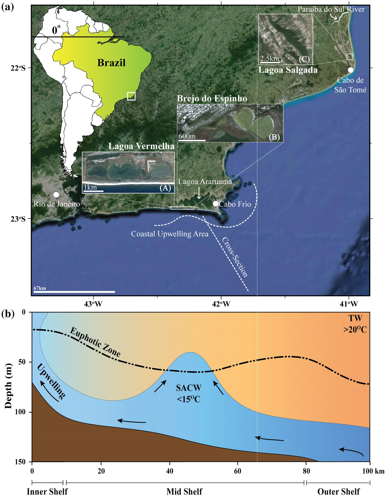

Oceanographic and sedimentological influences on carbonate geochemistry and mineralogy in hypersaline coasal lagoons, Rio de Janeiro state, Brazil

Resumo em Português
A Região dos Lagos, situada ao longo da costa leste do Rio de Janeiro, Brasil, é dominada por um microclima semiárido atribuído à ocorrência de ressurgência oceanográfica no Cabo Frio, nas proximidades. Essa ressurgência está fortemente associada à predominância de ventos nordeste durante a primavera/verão austral e à mudança direcional da orientação da linha costeira. Algumas lagoas costeiras hipersalinas dessa região têm sido intensamente estudadas nos últimos 25 anos por representarem locais relativamente raros de precipitação primária de dolomita moderna. A comparação de sinais ambientais em três lagoas indica que, durante os últimos ~3,0 mil anos, mudanças nos parâmetros oceanográficos podem ter influenciado processos biogeoquímicos associados à produção de sedimentos carbonáticos. O momento da queda do nível do mar pode ter influenciado um período de ressurgência mais intensa, que coincide com a precipitação de dolomita estequiométrica por volta de 2,3 mil anos AP nas lagoas localizadas ao longo da costa a oeste do Cabo Frio. A dolomita encontrada nas seções inferiores dos testemunhos da Lagoa Vermelha e do Brejo do Espinho apresenta valores de δ¹⁸O mais positivos, indicando maior evaporação durante um período de condições semiáridas mais acentuadas, correspondendo a maior aporte terrestre. Os valores de δ¹³C mais baixos indicam reequilíbrio com a entrada de novos íons carbonato derivados da decomposição da matéria orgânica durante a formação da dolomita. Em contraste, o testemunho de sedimento da Lagoa Salgada, localizada a nordeste do Cabo Frio, não contém dolomita, e os valores de δ¹³C muito positivos registrados nos sedimentos carbonáticos são atribuídos à metanogênese mediada por microrganismos, enquanto os valores de δ¹⁸O permanecem relativamente constantes em torno de zero ao longo de todo o testemunho.